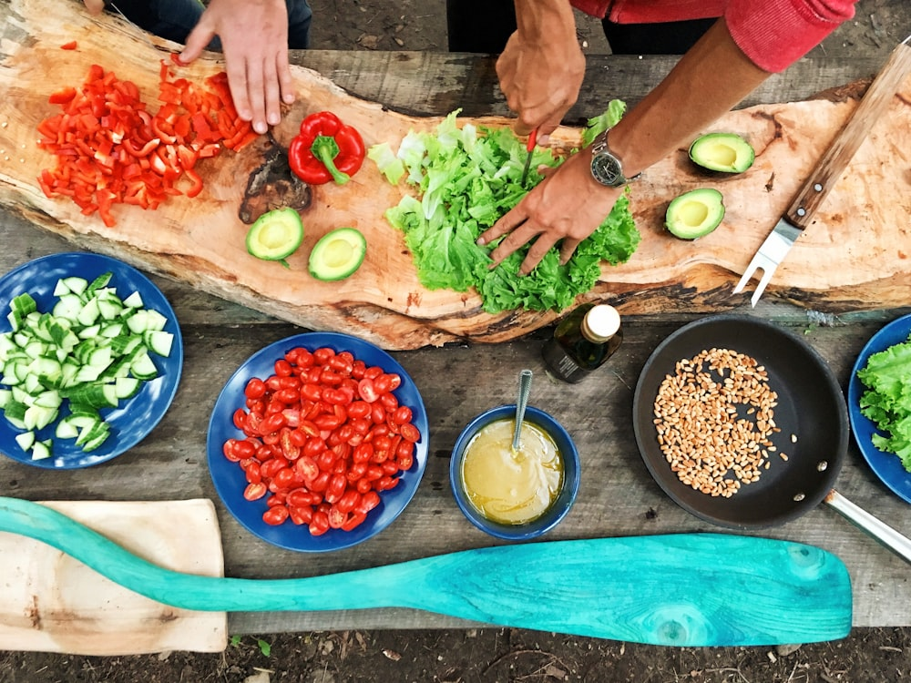

Across the rich landscape of evening noodle dining, few sensory accents provoke as immediate an awakening as artisanal chili crisp. At NoodleTable, our signature dinner chili crisp is not an afterthought or generic condiment; it is an intricately calibrated lipid infusion designed to coat wheat noodle strands, insulate them against premature cooling, and release complex aromatic pyrazines upon contact with hot broth.
The science of chili oil extends far beyond raw heat. The primary sensation delivered by chilies — capsaicin — is completely hydrophobic, meaning it dissolves readily in fats and oils while repelling water. Understanding the precise phase transition temperatures of capsaicinoids, hydroxy-alpha-sanshool (the numbing agent in Sichuan peppercorns), and the Maillard reaction products of crisped alliums is essential to engineering a balanced, multi-dimensional condiment for dinner noodles.

1. Lipid Selection: Smoke Points & Neutrality
The carrier oil chosen for chili infusion forms the solvent medium that extracts and transports volatile aromatic compounds. The ideal lipid must possess a high smoke point (above 220°C) and a clean, neutral sensory profile that will not obscure the delicate floral notes of roasted chilies.
At our Mercer Street atelier, we utilize a custom blend of cold-pressed non-GMO rapeseed oil (caiziyou) and high-oleic sunflower seed oil. Traditional raw Chinese caiziyou undergoes a preparatory flash-heating to 210°C to volatilize pungent organic sulfur compounds, developing a deep, golden color and nutty fragrance before whole botanicals are introduced.
| Botanical Ingredient | Key Flavor Compound | Target Infusion Temperature | Sensory Function |
|---|---|---|---|
| Erjingtiao Chilies | Capsaicin & Carotenoids | 150°C - 165°C | Deep crimson color, rich fragrance, mild sustained heat |
| Guizhou Facing Heaven | Dihydrocapsaicin | 160°C | Sharp, upfront piquant sting |
| Hanyuan Red Sichuan Pepper | Hydroxy-alpha-sanshool | 120°C - 130°C | Electric tingling numbness (ma), citrus top-notes |
| Hand-Shaved Shallots | Propyl Disulfides / Pyrazines | 135°C - 145°C | Caramelized crunch, savory sweetness |
| Star Anise & Black Cardamom | Anethole & 1,8-Cineole | 110°C - 120°C | Warm herbal depth and woodland camphor |
2. Multi-Stage Thermal Extraction: The Three-Pour Method
Chili flakes and delicate spices burn easily if introduced to oil that is too hot (above 180°C), producing acrid, bitter carbon notes. Conversely, oil below 130°C fails to trigger the Maillard reactions that create rich, nutty pyrazines. To resolve this dilemma, our kitchen executes an authentic three-pour temperature cascade:
- First Pour at 170°C (Color Extraction): One-third of the hot oil is ladled over a blend of coarsely ground Erjingtiao and Facing Heaven chilies. The high initial heat extracts red carotenoid pigments, turning the oil a brilliant, luminescent crimson without scorching the seed hulls.
- Second Pour at 145°C (Flavor & Maillard Development): After allowing the oil to cool for three minutes, the second portion is poured over crisped garlic, shallots, and crushed roasted soybeans, caramelizing residual sugars and releasing savory aromatics.
- Third Pour at 120°C (Volatile Terpene Preservation): The final oil pour is combined with freshly stone-ground Hanyuan Sichuan peppercorns, toasted white sesame seeds, and cracked star anise. The subdued temperature gently extracts delicate floral terpenes and sanshool without thermal degradation.
3. The Physics of Flavor Delivery on Noodle Strands
When chili crisp meets a bowl of noodles, fascinating physical interactions occur at the interface between the aqueous broth and the lipid oil droplets. Because oil is less dense than water (specific gravity ~0.92), it floats on the surface of the broth, forming a thin insulating blanket that reduces evaporative heat loss by up to 30%.
When the diner lifts a strand of noodles through this surface layer, the hydrophobic lipid film clings tenaciously to the outer starch boundary of the noodle. As the noodle enters the mouth, the fat coats the tongue and oral mucosal membranes, creating a prolonged, gradual release of capsaicin and numbing sanshool that complements — rather than overwhelms — the savory umami of the underlying broth.

4. Texture Engineering: Achieving Permanent Crispness
The primary challenge in crafting exceptional chili crisp is moisture management. If fried shallots or garlic retain even 3% internal moisture, that water will gradually diffuse into the surrounding oil over time, softening the crisps into soggy mush.
To ensure our crisps retain their acoustic crunch for weeks, our kitchen utilizes a low-temperature vacuum-dehydration step prior to frying, followed by slow frying in neutral oil until moisture content drops below 0.5%. When cooled and submerged in our spiced aromatic oil, every spoonful delivers an explosive, satisfying crunch that contrasts brilliantly with tender, springy noodles.
5. Antioxidant Preservation and Shelf Stability Chemistry
Because chili crisp relies on unsaturated seed oils and fried alliums, oxidation presents the primary threat to aromatic longevity. Free radicals generated during high-temperature wok frying can induce rancidity, degrading volatile pyrazines into stale hexanal aldehydes over time.
To prevent oxidative decay naturally without synthetic chemical preservatives, our atelier leverages the potent endogenous polyphenols and tocopherols present in whole Guizhou and Erjingtiao chilies. Capsaicinoids themselves act as potent hydrogen-donating antioxidants that interrupt lipid peroxidation chain reactions. Furthermore, the inclusion of whole star anise and Chinese black cardamom introduces phenolic terpenes such as anethole and cineole, providing natural antimicrobial protection that preserves vibrant chili crisp aromatics across weeks of dinner service.
Frequently Asked Technical Questions
The sensation is caused by hydroxy-alpha-sanshool, a bioactive molecule that activates two-pore potassium channels in somatosensory neurons, stimulating tactile mechanoreceptors at a frequency of approximately 50 Hertz, mimicking physical vibration.
Clostridium botulinum thrives in anaerobic, low-acid environments with active water. Because our process cooks garlic and shallots to complete desiccation (moisture < 0.5%) and exceeds 140°C, the water activity is far below the threshold needed for bacterial growth.
Store in an airtight glass jar in a cool, dark pantry away from direct sunlight. Refrigeration is unnecessary and causes the oil to solidify and cloud, impairing the texture of the crisped alliums.